- 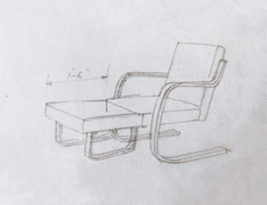
- 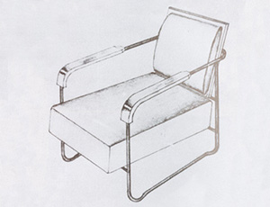
- 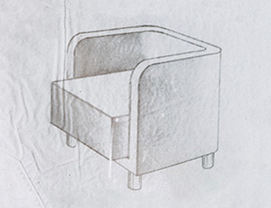
- 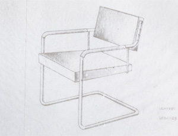
- 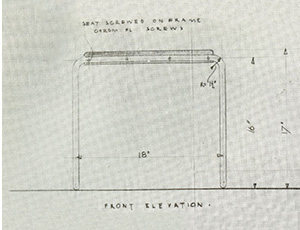
- 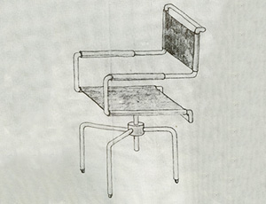
- 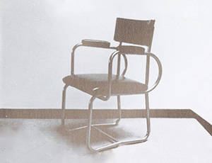
- 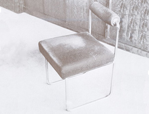
- 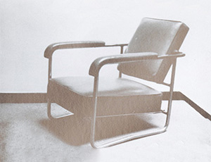
- 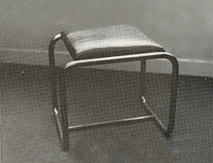
- 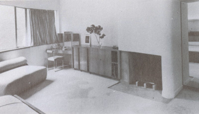
- 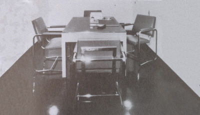
- 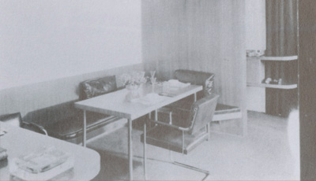
- 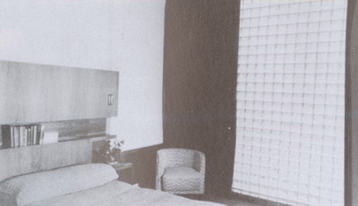
- 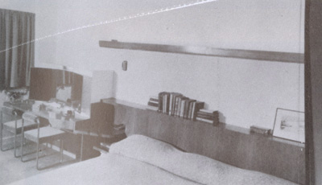
- 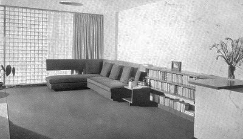
- 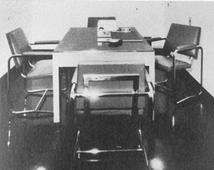
- 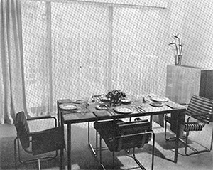
- 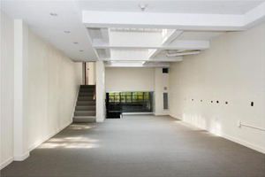

- 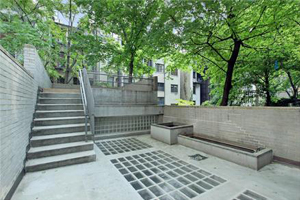
- 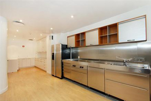
- 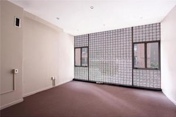
- 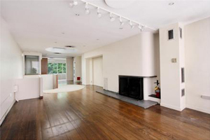
- 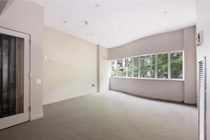


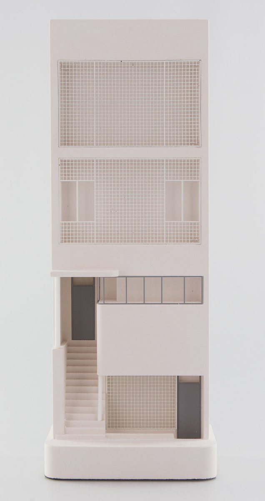
William Lescaze (1896-1969) was an American archit-
ect originally from Switzerland. Highly influenced by
Le Corbusier and the De Stiji movement, Lescaze was
best known for his "International Style" architecture
and for introducing the style to North America. With
architect George Howe, they built the Philadelphia
Savings Fund Society (PSFS) Buidling. Lescaze lived
and worked in New York City, where he resided in his
house and office in midtown from 1934 until his death.
William Lescaze House and Office
211 East 48 Street, New York, NY 10017
William Lescaze designed his House and Office with the goal
of creating a space for a modern lifestyle: easy and efficient
cleaning, latest technology, and economy friendly materials.
He was also interested in creating his house and office as an
“urban oasis,” a place where one can take a break from the
busy city, with glass bricks that let in natural light, a rooftop
garden, and lots of open space. He achieved this with care-
ful design, selection, and arrangement of furniture. Lescaze's
monument truly exemplifies the International Style, which ha-
s three key principles: the emphasis on volume rather than
mass, the focus on balance rather than symmetry, and the
elimination of ornaments.
“When we built our house in 1934, glass bricks had not yet
been used in this country.Unbelievable but true. I had seen
a few of them in Europe, and they seemed to me an excel-
lent new material to do a job I was anxious to have done.
They added to the amount of daylight without adding to
the fuel bill, they ley daylight through yet obscured the un-
interesting view of the nine-story apartment house across
the street, and they deadened street noises. An enterpris-
ing manufacturer agreed to make the first American glass
blocks for us in his plant in Illinois. But what an epic battle
we had with the Code: it lasted at least three months, back
and forth. Three months of agony.”
— William Lescaze, on using glass blocks for his house.
“There was not much point in building a building unl-
ess it was thoroughly modern from the point of view of
equipment and living qualities, because we want to
show our clients what we believe in, what we advo-
cate, how the materials will wear, and to show them
the job that this particular equipment accomplishes.”
— George Daub, chief construction supervisor to Lescaze.
“...almost no one who has had
the opportunity to inspect the
Lescaze house from top to bo-
ttom goes away with his faith
in the Traditional approach un-
shaken... it requires no prophet
to see the great possibilities from
the reclamation of much deteri-
orated housing if the slogan ab-
out walking to work can be am-
ended to read, ‘walk downstairs
to work.’”
— Arts and Decoration Magazine.